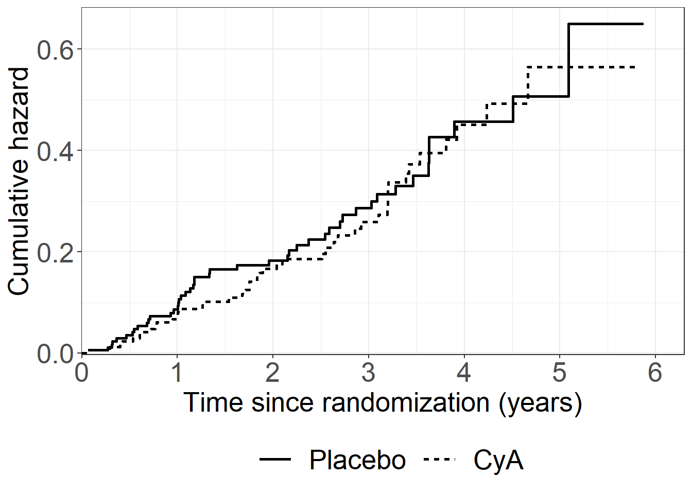
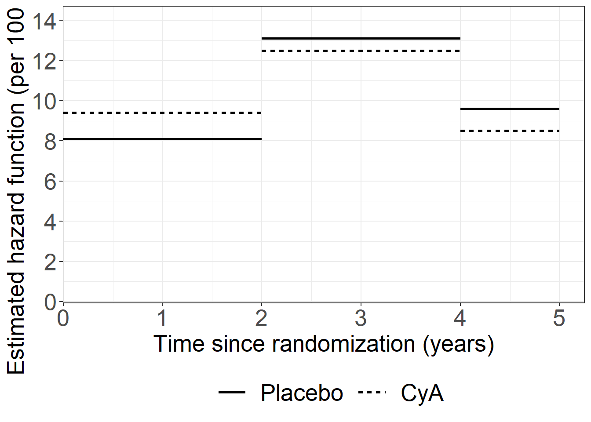
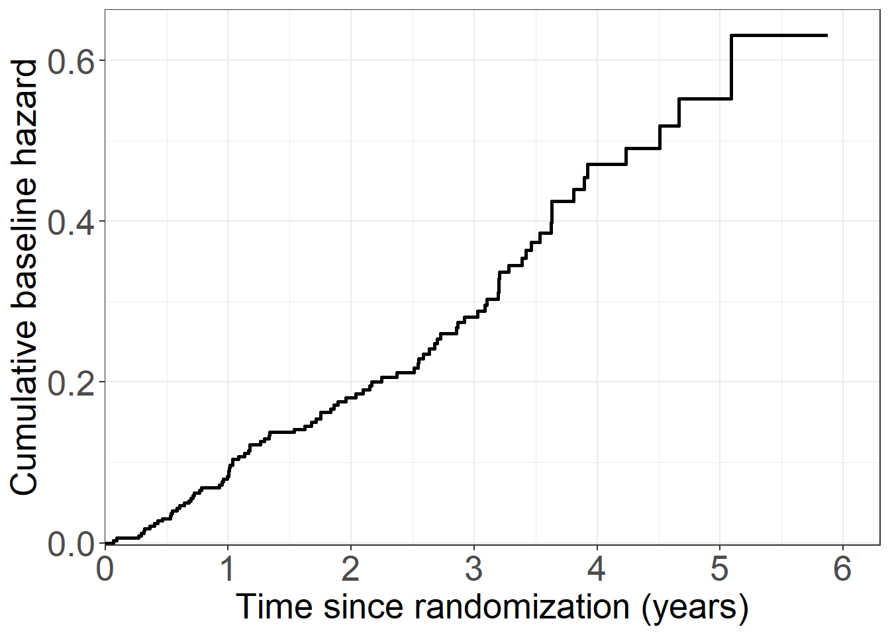
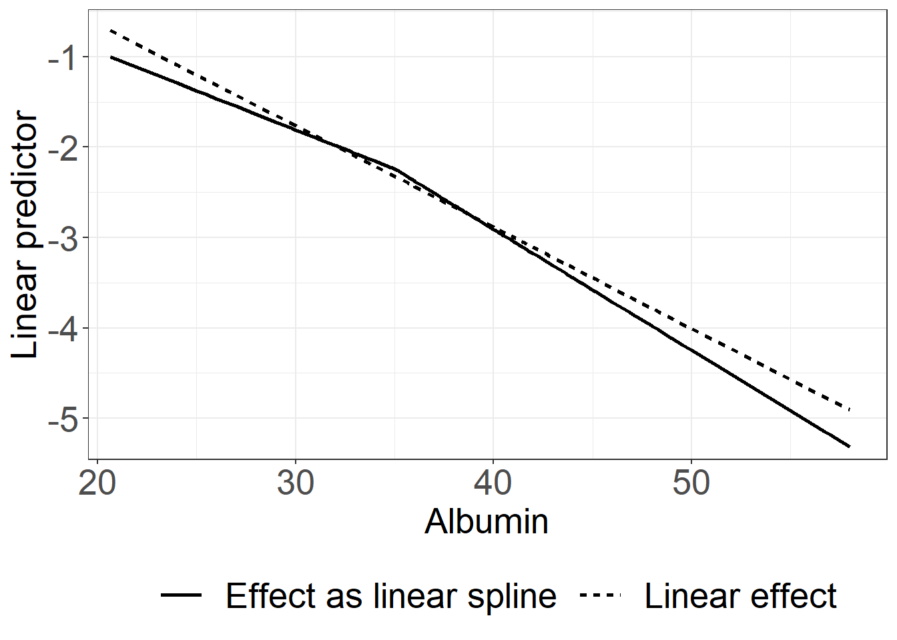
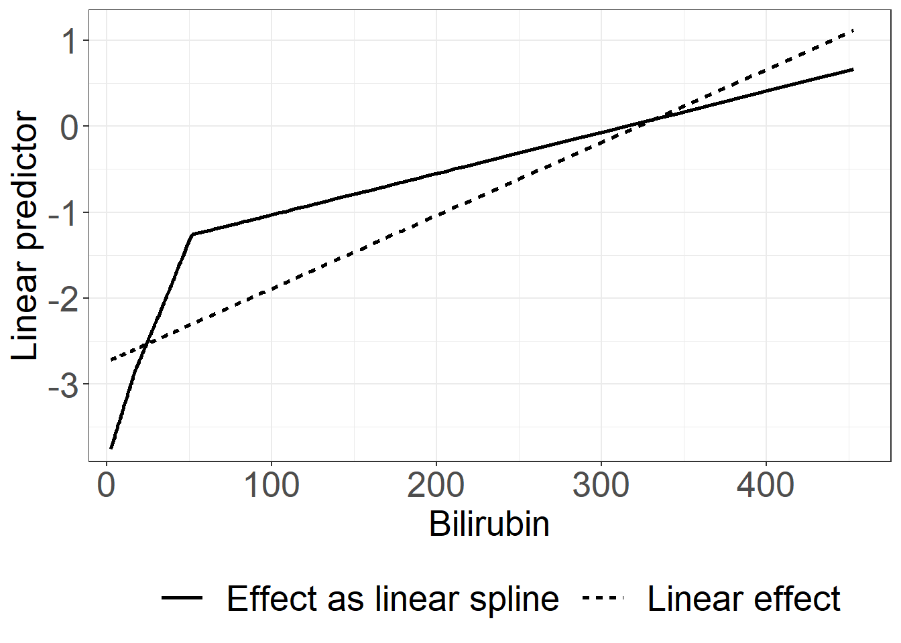
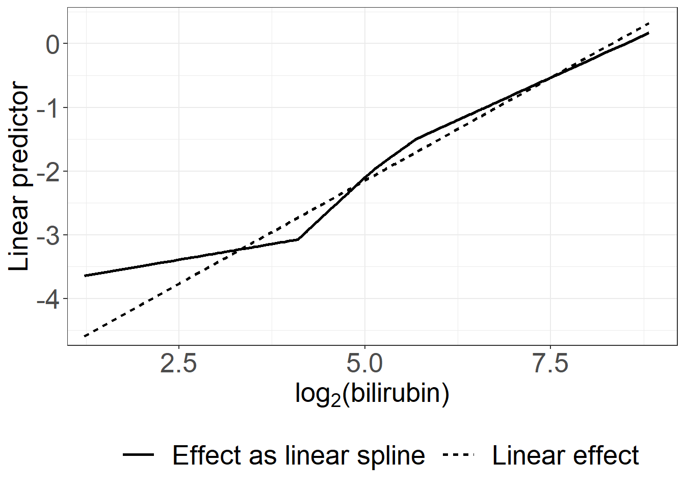
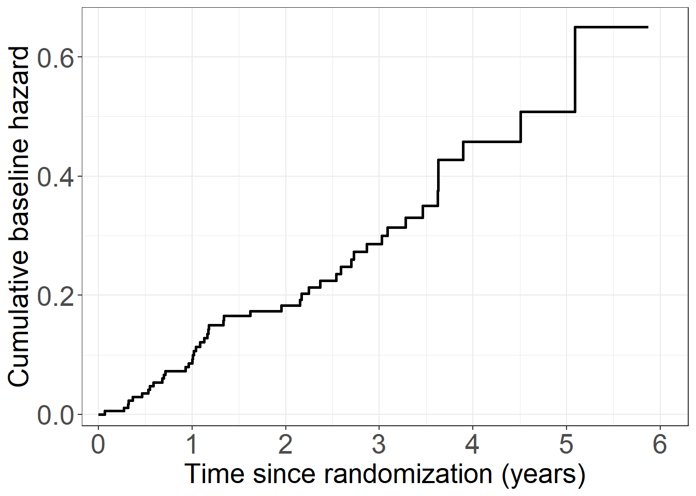
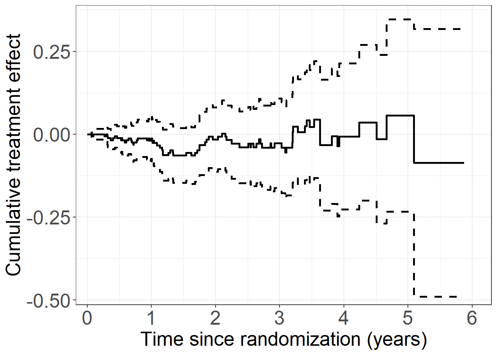
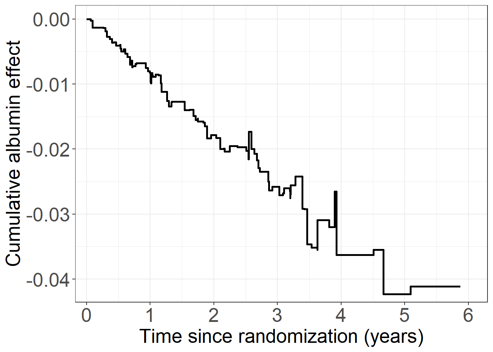
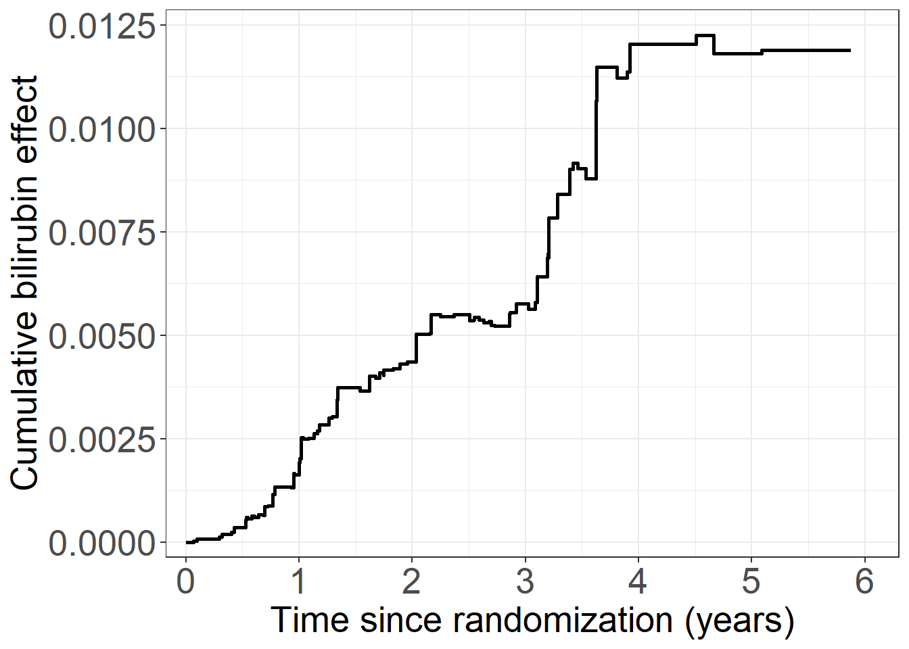

pbc3 <- data.frame(read.csv("data/pbc3.csv"))
pbc3$fail <- ifelse(pbc3$status != 0, 1, 0) # event/failure indicator
pbc3$tment_char <- ifelse(pbc3$tment == 0, "Placebo", "CyA")
# Add transformations of covariates
pbc3$albnorm <- with(pbc3, (alb-35)*(alb>35))
pbc3$alb10 <- with(pbc3, alb/10)
pbc3$alb2 <- with(pbc3, alb10*alb10)
pbc3$bilihigh <- with(pbc3, (bili-17.1)*(bili>17.1))
pbc3$bilitoohigh <- with(pbc3, (bili-34.2)*(bili>34.2))
pbc3$bilimuchtoohigh <- with(pbc3, (bili-51.3)*(bili>51.3))
pbc3$bili100 <- with(pbc3, bili/100)
pbc3$bili2 <- with(pbc3, bili100*bili100)
pbc3$log2bili <- with(pbc3, log2(bili))
pbc3$log2bili2 <- with(pbc3, log2bili*log2bili)
pbc3$logbilihigh <- with(pbc3, (log2bili-log2(17.1))*(bili>17.1))
pbc3$logbilitoohigh <- with(pbc3, (log2bili-log2(34.2))*(bili>34.2))
pbc3$logbilimuchtoohigh <- with(pbc3, (log2bili-log2(51.3))*(bili>51.3))Read data
proc import out=pbc3
datafile="data/pbc3.csv"
dbms=csv replace;
run;
data pbc3;
set pbc3;
albnorm=(alb-35)*(alb>35);
alb10=alb/10; alb2=alb10*alb10;
bilihigh=(bili-17.1)*(bili>17.1);
bilitoohigh=(bili-34.2)*(bili>34.2);
bilimuchtoohigh=(bili-51.3)*(bili>51.3);
bili100=bili/100; bili2=bili100*bili100;
log2bili=log2(bili);
logbilihigh=(log2bili-log2(17.1))*(bili>17.1);
logbilitoohigh=(log2bili-log2(34.2))*(bili>34.2);
logbilimuchtoohigh=(log2bili-log2(51.3))*(bili>51.3);
log2bili2=log2bili*log2bili;
run;Figure 2.1
# General plotting style
library(ggplot2)
theme_general <- theme_bw() +
theme(text = element_text(size = 20),
axis.text.x = element_text(size = 20),
axis.text.y = element_text(size = 20),
legend.position = "bottom",
legend.title=element_blank(),
legend.text = element_text(size = 20),
legend.key.size = unit(2,"line"))
# Nelson Aalen estimate by treatment
library(survival)
nafit <- survfit(Surv(days, status != 0) ~ tment, data = pbc3)
# Collect data for plot
nadata <- data.frame(cumhaz = nafit$cumhaz, time = nafit$time,
tment = c(rep(names(nafit$strata)[1], nafit$strata[1]),
rep(names(nafit$strata)[2], nafit$strata[2])))
# Create Figure 2.1
library(ggplot2)
fig2.1 <- ggplot(aes(x = time / 365.25, y = cumhaz, linetype = tment),
data = nadata) +
geom_step(size = 1) +
scale_linetype_discrete("Treatment", labels = c("Placebo", "CyA")) +
xlab("Time since randomization (years)") +
ylab("Cumulative hazard") +
scale_x_continuous(expand = expansion(mult = c(0.001, 0.05)),
limits = c(0, 6), breaks = seq(0, 6, 1)) +
scale_y_continuous(expand = expansion(mult = c(0.005, 0.05))) +
theme_general Warning: Using `size` aesthetic for lines was deprecated in ggplot2 3.4.0.
ℹ Please use `linewidth` instead.fig2.1
proc phreg data=pbc3;
model days*status(0)=;
strata tment;
baseline out=hazdat cumhaz=naa stdcumhaz=sdnaa;
run;
data hazdat;
set hazdat;
daysyears = days/365.25;
run;
proc gplot data=hazdat;
plot naa*daysyears=tment/haxis=axis1 vaxis=axis2;
axis1 order=0 to 6 by 1 minor=none
label=('Years');
axis2 order=0 to 0.7 by 0.1 minor=none
label=(a=90 'Cumulative hazard');
symbol1 v=none i=stepjl c=red;
symbol2 v=none i=stepjl c=blue;
run;In-text: Nelson-Aalen estimates at 2 years
tail(subset(nadata, nadata$time <= 2*365.25 & nadata$tment == "tment=0"),1) cumhaz time tment
60 0.183065 724 tment=0tail(subset(nadata, nadata$time <= 2*365.25 & nadata$tment == "tment=1"),1) cumhaz time tment
209 0.1668539 725 tment=1Table 2.1
# Data for Table 2.1
cuts <- c(0, 2, 4) * 365.25
# Make the data ready using survSplit from survival package
library(survival)
pbc3mult <- as.data.frame(survSplit(Surv(days, fail) ~ ., pbc3,
cut = cuts[-1],
episode = "timegroup"))
pbc3mult$risktime <- pbc3mult$days - cuts[pbc3mult$timegroup]
pbc3mult$timegroup <- as.factor(pbc3mult$timegroup)
library(dplyr)
Attaching package: 'dplyr'The following objects are masked from 'package:stats':
filter, lagThe following objects are masked from 'package:base':
intersect, setdiff, setequal, unionpcwdata <- pbc3mult %>%
group_by(tment, timegroup) %>%
summarise(fail = sum(fail), risktime = sum(days - cuts[timegroup]))`summarise()` has grouped output by 'tment'. You can override using the
`.groups` argument.pcwdata$risktimeyrs <- pcwdata$risktime/365.25
pcwdata$hazard <- 36525*pcwdata$fail/pcwdata$risktime
pcwdata$SD <- 36525*sqrt(pcwdata$fail)/pcwdata$risktime
data.frame(pcwdata) tment timegroup fail risktime risktimeyrs hazard SD
1 0 1 27 104856.0 287.08008 9.405041 1.810001
2 0 2 17 49673.0 135.99726 12.500252 3.031756
3 0 3 2 8642.0 23.66051 8.452904 5.977106
4 1 1 24 107931.5 295.50034 8.121818 1.657859
5 1 2 18 50284.5 137.67146 13.074605 3.081714
6 1 3 2 7599.0 20.80493 9.613107 6.797493/* prepare for poisson model */
data pbc3mult;
set pbc3;
fail=(days<=2 * 365.25)*(status ne 0);
risktime=min(2 * 365.25, days);
logrisk=log(risktime); interv=1; output;
if days>2 * 365.25 then do;
fail=(days<=4 * 365.25)*(status ne 0);
risktime=min(2 * 365.25 ,days-2 * 365.25);
logrisk=log(risktime); interv=2; output; end;
if days>4 * 365.25 then do;
fail=status ne 0;
risktime=days-4 * 365.25;
logrisk=log(risktime); interv=3; output; end;
run;
proc means sum data=pbc3mult;
class tment interv;
var fail risktime;
run;
proc genmod data=pbc3mult;
where tment=1;
class interv;
model fail=interv/dist=poi offset=logrisk;
estimate '0-2 years' intercept 1 interv 1 0 0/exp;
estimate '2-4 years' intercept 1 interv 0 1 0/exp;
estimate '4-6 years' intercept 1 interv 0 0 1/exp;
run;
proc genmod data=pbc3mult;
where tment=0;
class interv;
model fail=interv/dist=poi offset=logrisk;
estimate '0-2 years' intercept 1 interv 1 0 0/exp;
estimate '2-4 years' intercept 1 interv 0 1 0/exp;
estimate '4-6 years' intercept 1 interv 0 0 1/exp;
run;Figure 2.2
# Rates + cuts from Table 2.1
rateCyA <- c(8.1,13.1,9.6)
ratePbo <- c(9.4,12.5,8.5)
pcwtime <- c(0,2,4,5)
# Collect data
plotdata <- data.frame(rates = c(rateCyA, ratePbo),
tment = c(rep("CyA", length(rateCyA)),
rep("Placebo", length(ratePbo))),
times_s = rep(pcwtime[-4], 2),
times = rep(pcwtime[-1], 2))
# Create Figure 2.2
fig2.2 <- ggplot(aes(x = time, y = rates, linetype = tment), data = plotdata) +
geom_segment(aes(x = times_s, y = rates, xend = times, yend = rates),size=1) +
scale_linetype_discrete("Treatment", labels = c("Placebo", "CyA")) +
xlab("Time since randomization (years)") +
ylab("Estimated hazard function (per 100 years)") +
scale_x_continuous(expand = expansion(mult = c(0.001, 0.05)),
limits = c(0, 5),
breaks = seq(0, 5, 1)) +
scale_y_continuous(expand = expansion(mult = c(0.005, 0.05)),
limits = c(0,14), breaks = seq(0, 14, 2)) +
theme_general
fig2.2
In-text: LRT test piece-wise exponential model
library(stats)
poisfull <- glm(fail ~ - 1 + tment + timegroup + tment:timegroup +
offset(log(risktime/36525)), data = pbc3mult, family=poisson)
poisred <- glm(fail ~ - 1 + timegroup +
offset(log(risktime/36525)), data = pbc3mult, family=poisson)
anova(poisred,poisfull,test="LRT")Analysis of Deviance Table
Model 1: fail ~ -1 + timegroup + offset(log(risktime/36525))
Model 2: fail ~ -1 + tment + timegroup + tment:timegroup + offset(log(risktime/36525))
Resid. Df Resid. Dev Df Deviance Pr(>Chi)
1 620 459.66
2 617 459.35 3 0.30813 0.9585# or
library(lmtest)Loading required package: zoo
Attaching package: 'zoo'The following objects are masked from 'package:base':
as.Date, as.Date.numericlrtest(poisred,poisfull)Likelihood ratio test
Model 1: fail ~ -1 + timegroup + offset(log(risktime/36525))
Model 2: fail ~ -1 + tment + timegroup + tment:timegroup + offset(log(risktime/36525))
#Df LogLik Df Chisq Pr(>Chisq)
1 3 -319.83
2 6 -319.68 3 0.3081 0.9585In-text: Logrank test and p-value
library(survival)
lr<-survdiff(Surv(days, status != 0) ~ tment, data = pbc3)
c(lr$chisq,lr$pvalue)[1] 0.07708002 0.78129419proc lifetest data=pbc3 notable;
time days*status(0);
strata tment;
run;Figure 2.3
# NA data from figure 2.1 model fit
tment1 <- subset(nadata, tment == "tment=1")
# Estimated hazard per time group
pcwdata$hazard_timegroup <- pcwdata$fail / pcwdata$risktime
# Add a numeric version of the treatment to the NA estimates
nadata$tmentnum <- ifelse(nadata$tment == "tment=1", 1, 0)
# Add piecewise constant hazard to data
nadata$pwch <- NULL
# Between time 0 and 2
nadata$pwch[nadata$time <= 2 * 365.25] <- nadata$time[nadata$time <= 2 * 365.25] *
(pcwdata$hazard_timegroup[1] * (1-nadata$tmentnum[nadata$time <= 2 * 365.25]) +
pcwdata$hazard_timegroup[4] * (nadata$tmentnum[nadata$time <= 2 * 365.25]))
# Between time 2 and 4
nadata$pwch[nadata$time > 2 * 365.25 & nadata$time <= 4* 365.25 ] <- 2 * 365.25 *
(pcwdata$hazard_timegroup[1] * (1-nadata$tmentnum[nadata$time > 2 * 365.25 & nadata$time <= 4 * 365.25]) +
pcwdata$hazard_timegroup[4] * (nadata$tmentnum[nadata$time > 2 * 365.25 & nadata$time <= 4 * 365.25])) +
(nadata$time[nadata$time > 2 * 365.25 & nadata$time <= 4 * 365.25] - 2 * 365.25) *
(pcwdata$hazard_timegroup[2] * (1-nadata$tmentnum[nadata$time > 2 * 365.25 & nadata$time <= 4 * 365.25]) +
pcwdata$hazard_timegroup[5] * (nadata$tmentnum[nadata$time > 2 * 365.25 & nadata$time <= 4 * 365.25]))
# After time 4
nadata$pwch[nadata$time > 4 * 365.25] <- 2 * 365.25 *
(pcwdata$hazard_timegroup[1] * (1-nadata$tmentnum[nadata$time > 4 * 365.25]) +
pcwdata$hazard_timegroup[4] * (nadata$tmentnum[nadata$time > 4 * 365.25])) +
2 * 365.25 *
(pcwdata$hazard_timegroup[2] * (1-nadata$tmentnum[nadata$time > 4 * 365.25]) +
pcwdata$hazard_timegroup[5] * (nadata$tmentnum[nadata$time > 4 * 365.25])) +
(nadata$time[nadata$time > 4 * 365.25] - 4 * 365.25) *
(pcwdata$hazard_timegroup[3] * (1-nadata$tmentnum[nadata$time > 4 * 365.25]) +
pcwdata$hazard_timegroup[6] * (nadata$tmentnum[nadata$time > 4 * 365.25]))
# Reformat for plot
piecepdata <- data.frame(cumhaz = c(nadata$cumhaz, nadata$pwch),
time = rep(nadata$time, 2),
tmentnum = rep(nadata$tmentnum, 2),
type = c(rep("Nelson-Aalen", length(nadata$time)),
rep("Piece-wise exponential", length(nadata$time))))
# Only for treatment 1
piecepdata1 <- subset(piecepdata, tmentnum == 1)
# Create Figure 2.3
fig2.3 <- ggplot(aes(x = time / 365.25, y = cumhaz, linetype = type),
data = subset(piecepdata1, type == "Nelson-Aalen")) +
geom_step(size = 1) +
geom_line(aes(x = time / 365.25, y = cumhaz, linetype = type), size = 1,
data = subset(piecepdata1, type == "Piece-wise exponential")) +
labs(linetype = "Type") +
xlab("Time since randomization (years)") +
ylab("Cumulative hazard") +
scale_x_continuous(expand = expansion(mult = c(0.001, 0.05)),
limits = c(0, 6),
breaks = seq(0, 6, 1)) +
scale_y_continuous(expand = expansion(mult = c(0.005, 0.05))) +
theme_general+
theme(legend.title=element_blank(),
legend.text = element_text(size = 20),
legend.key.size = unit(2,"line"))
fig2.3
In-text: Cox model with treatment only
# Fit a Cox model using the pbc3 data with treatment as a covariate
library(survival)
coxfit <- coxph(Surv(days, status != 0) ~ tment, data = pbc3, method = "breslow")
coxfitCall:
coxph(formula = Surv(days, status != 0) ~ tment, data = pbc3,
method = "breslow")
coef exp(coef) se(coef) z p
tment -0.05854 0.94314 0.21092 -0.278 0.781
Likelihood ratio test=0.08 on 1 df, p=0.7813
n= 349, number of events= 90 proc phreg data=pbc3;
model days*status(0)=tment/rl;
run;Figure 2.5
# Extract cumulative baseline hazard
coxcumhaz <- basehaz(coxfit, centered = FALSE)
# Collect data for plot (Breslow estimate)
coxdata <- data.frame(cumhaz = coxcumhaz$hazard,
time = coxcumhaz$time,
tment = rep("0", nrow(coxcumhaz)),
type = rep("Breslow estimate", nrow(coxcumhaz)))
fig2.5 <- ggplot(aes(x = time / 365.25, y = cumhaz, linetype = tment),
data = coxdata) +
geom_step(size = 1) +
xlab("Time since randomization (years)") +
ylab("Cumulative baseline hazard") +
scale_linetype_discrete("Treatment", labels = c("Placebo")) +
scale_x_continuous(expand = expansion(mult = c(0.001, 0.05)),
limits = c(0, 6),
breaks = seq(0, 6, 1)) +
scale_y_continuous(expand = expansion(mult = c(0.005, 0.05))) +
theme_general+theme(legend.position = "none")
fig2.5
data cov;
tment=0;
run;
proc phreg data=pbc3;
model days*status(0)=tment/rl;
baseline out=breslow cumhaz=breslow covariates=cov;
run;
data breslow;
set breslow;
daysyears = days/365.25;
run;
proc gplot data=breslow;
plot breslow*daysyears=tment/haxis=axis1 vaxis=axis2;
axis1 order=0 to 6 by 1 minor=none label=('Years');
axis2 order=0 to 0.7 by 0.1 minor=none label=(a=90 'Cumulative baseline hazard');
symbol1 v=none i=stepjl c=blue;
run;Table 2.3
# Average covariate values of albumin and bilirubin per treatment
library(dplyr)
tabledata <- pbc3 %>%
group_by(tment, tment_char) %>%
summarise(n = sum(id != 0),
average_albumin = mean(alb, na.rm = TRUE),
# NOTE: Removes missing observations from mean computation
average_bilirubin = mean(bili, na.rm = TRUE),
)`summarise()` has grouped output by 'tment'. You can override using the
`.groups` argument.data.frame(tabledata) tment tment_char n average_albumin average_bilirubin
1 0 Placebo 173 39.26101 42.33674
2 1 CyA 176 37.50731 48.55540Table 2.4
# Cox model with treatment, albumin and bilirubin as covariates
library(survival)
coxfit <- coxph(Surv(days, status != 0) ~ tment + alb + bili,
data = pbc3)
coxfitCall:
coxph(formula = Surv(days, status != 0) ~ tment + alb + bili,
data = pbc3)
coef exp(coef) se(coef) z p
tment -0.4965639 0.6086184 0.2256162 -2.201 0.0277
alb -0.1156596 0.8907784 0.0212810 -5.435 5.48e-08
bili 0.0089494 1.0089895 0.0009801 9.131 < 2e-16
Likelihood ratio test=99.06 on 3 df, p=< 2.2e-16
n= 343, number of events= 88
(6 observations deleted due to missingness)SAS
proc phreg data=pbc3;
model days*status(0)=tment alb bili / rl;
run;:::
In-text: Poisson model with treatment only
library(stats)
library(broom) # For using tidy() function
poism <- glm(fail ~ tment + timegroup-1 +
offset(log(risktime/365.25)), data = pbc3mult,family = poisson)
tidy(poism, exponentiate = T, conf.int = T)# A tibble: 4 × 7
term estimate std.error statistic p.value conf.low conf.high
<chr> <dbl> <dbl> <dbl> <dbl> <dbl> <dbl>
1 tment 0.942 0.211 -0.284 7.76e- 1 0.622 1.43
2 timegroup1 0.0902 0.174 -13.8 2.51e-43 0.0631 0.125
3 timegroup2 0.132 0.198 -10.2 1.29e-24 0.0876 0.191
4 timegroup3 0.0925 0.509 -4.68 2.91e- 6 0.0283 0.220Table 2.5
# Poisson model with treatment, albumin and bilirubin as covariates
poismod_t25 <- glm(fail ~ tment + alb + bili+ timegroup-1 +
offset(log(risktime/365.25)),data=pbc3mult,family=poisson)
tidy(poismod_t25)# A tibble: 6 × 5
term estimate std.error statistic p.value
<chr> <dbl> <dbl> <dbl> <dbl>
1 tment -0.475 0.224 -2.12 3.39e- 2
2 alb -0.112 0.0213 -5.28 1.30e- 7
3 bili 0.00846 0.000939 9.01 2.12e-19
4 timegroup1 1.29 0.806 1.60 1.10e- 1
5 timegroup2 2.15 0.833 2.58 9.99e- 3
6 timegroup3 1.61 1.01 1.59 1.12e- 1Table 2.6
# Add transformations of covariates
pbc3$albnorm <- with(pbc3, (alb-35)*(alb>35))
pbc3$bilihigh <- with(pbc3, (bili-17.1)*(bili>17.1))
pbc3$bilitoohigh <- with(pbc3, (bili-34.2)*(bili>34.2))
pbc3$bilimuchtoohigh <- with(pbc3, (bili-51.3)*(bili>51.3))
pbc3$log2bili <- with(pbc3, log2(bili))
pbc3$log2bili2 <- with(pbc3, log2bili*log2bili)
pbc3$logbilihigh <- with(pbc3, (log2bili-log2(17.1))*(bili>17.1))
pbc3$logbilitoohigh <- with(pbc3, (log2bili-log2(34.2))*(bili>34.2))
pbc3$logbilimuchtoohigh <- with(pbc3, (log2bili-log2(51.3))*(bili>51.3))
#------------------------------------------------------------------#
# Table 2.6 Cox models
#------------------------------------------------------------------#
# Models for LR tests
library(lmtest)
base_coxmod <- coxph(Surv(days, status != 0) ~ tment + alb + bili,
eps = 1e-8, method = "breslow", data = pbc3)
base_coxmod_log <- coxph(Surv(days, status != 0) ~ tment + alb + log2bili,
eps = 1e-8, method = "breslow", data = pbc3)
# Splines Cox 1
coxmod_t26_l1 <- coxph(Surv(days, status != 0) ~ tment + alb + albnorm + bili,
eps = 1e-8, method = "breslow", data = pbc3)
coxmod_t26_l1Call:
coxph(formula = Surv(days, status != 0) ~ tment + alb + albnorm +
bili, data = pbc3, method = "breslow", eps = 1e-08)
coef exp(coef) se(coef) z p
tment -0.4750722 0.6218402 0.2261462 -2.101 0.0357
alb -0.0854244 0.9181225 0.0453150 -1.885 0.0594
albnorm -0.0557001 0.9458228 0.0726447 -0.767 0.4432
bili 0.0089810 1.0090214 0.0009843 9.124 <2e-16
Likelihood ratio test=99.66 on 4 df, p=< 2.2e-16
n= 343, number of events= 88
(6 observations deleted due to missingness)lrtest(coxmod_t26_l1, base_coxmod)Likelihood ratio test
Model 1: Surv(days, status != 0) ~ tment + alb + albnorm + bili
Model 2: Surv(days, status != 0) ~ tment + alb + bili
#Df LogLik Df Chisq Pr(>Chisq)
1 4 -413.12
2 3 -413.42 -1 0.6001 0.4386# Quadratic Cox 1
coxmod_t26_q1 <- coxph(Surv(days, status != 0) ~ tment + alb + I(alb*alb) + bili,
eps = 1e-8, method = "breslow", data = pbc3)
coxmod_t26_q1Call:
coxph(formula = Surv(days, status != 0) ~ tment + alb + I(alb *
alb) + bili, data = pbc3, method = "breslow", eps = 1e-08)
coef exp(coef) se(coef) z p
tment -0.4983093 0.6075570 0.2274284 -2.191 0.0284
alb -0.1295361 0.8785029 0.2130539 -0.608 0.5432
I(alb * alb) 0.0001944 1.0001945 0.0029754 0.065 0.9479
bili 0.0089499 1.0089901 0.0009801 9.132 <2e-16
Likelihood ratio test=99.07 on 4 df, p=< 2.2e-16
n= 343, number of events= 88
(6 observations deleted due to missingness)lrtest(coxmod_t26_q1, base_coxmod)Likelihood ratio test
Model 1: Surv(days, status != 0) ~ tment + alb + I(alb * alb) + bili
Model 2: Surv(days, status != 0) ~ tment + alb + bili
#Df LogLik Df Chisq Pr(>Chisq)
1 4 -413.41
2 3 -413.42 -1 0.0042 0.948# Splines Cox 2
coxmod_t26_l2 <- coxph(Surv(days, status != 0) ~ tment + alb +
bili + bilihigh + bilitoohigh + bilimuchtoohigh,
eps = 1e-8, method = "breslow", data = pbc3)
coxmod_t26_l2Call:
coxph(formula = Surv(days, status != 0) ~ tment + alb + bili +
bilihigh + bilitoohigh + bilimuchtoohigh, data = pbc3, method = "breslow",
eps = 1e-08)
coef exp(coef) se(coef) z p
tment -0.598494 0.549639 0.229637 -2.606 0.00915
alb -0.090970 0.913045 0.021894 -4.155 3.25e-05
bili 0.062425 1.064414 0.062296 1.002 0.31631
bilihigh -0.014631 0.985476 0.085327 -0.171 0.86386
bilitoohigh -0.002584 0.997419 0.052961 -0.049 0.96109
bilimuchtoohigh -0.040017 0.960773 0.026486 -1.511 0.13082
Likelihood ratio test=123.5 on 6 df, p=< 2.2e-16
n= 343, number of events= 88
(6 observations deleted due to missingness)lrtest(coxmod_t26_l2, base_coxmod)Likelihood ratio test
Model 1: Surv(days, status != 0) ~ tment + alb + bili + bilihigh + bilitoohigh +
bilimuchtoohigh
Model 2: Surv(days, status != 0) ~ tment + alb + bili
#Df LogLik Df Chisq Pr(>Chisq)
1 6 -401.22
2 3 -413.42 -3 24.396 2.064e-05 ***
---
Signif. codes: 0 '***' 0.001 '**' 0.01 '*' 0.05 '.' 0.1 ' ' 1# Quadratic Cox 2
coxmod_t26_q2 <- coxph(Surv(days, status != 0) ~ tment+alb+bili + I(bili*bili),
eps = 1e-8, method = "breslow", data = pbc3)
coxmod_t26_q2Call:
coxph(formula = Surv(days, status != 0) ~ tment + alb + bili +
I(bili * bili), data = pbc3, method = "breslow", eps = 1e-08)
coef exp(coef) se(coef) z p
tment -5.210e-01 5.939e-01 2.233e-01 -2.333 0.019640
alb -1.019e-01 9.031e-01 2.168e-02 -4.703 2.56e-06
bili 1.998e-02 1.020e+00 3.263e-03 6.122 9.21e-10
I(bili * bili) -3.051e-05 1.000e+00 9.098e-06 -3.354 0.000798
Likelihood ratio test=111.4 on 4 df, p=< 2.2e-16
n= 343, number of events= 88
(6 observations deleted due to missingness)lrtest(coxmod_t26_q2, base_coxmod)Likelihood ratio test
Model 1: Surv(days, status != 0) ~ tment + alb + bili + I(bili * bili)
Model 2: Surv(days, status != 0) ~ tment + alb + bili
#Df LogLik Df Chisq Pr(>Chisq)
1 4 -407.24
2 3 -413.42 -1 12.351 0.0004408 ***
---
Signif. codes: 0 '***' 0.001 '**' 0.01 '*' 0.05 '.' 0.1 ' ' 1# Splines Cox 3
coxmod_t26_l3 <- coxph(Surv(days, status != 0) ~ tment + alb + log2bili +
logbilihigh + logbilitoohigh + logbilimuchtoohigh,
eps = 1e-8, method = "breslow", data = pbc3)
coxmod_t26_l3Call:
coxph(formula = Surv(days, status != 0) ~ tment + alb + log2bili +
logbilihigh + logbilitoohigh + logbilimuchtoohigh, data = pbc3,
method = "breslow", eps = 1e-08)
coef exp(coef) se(coef) z p
tment -0.58019 0.55979 0.22957 -2.527 0.0115
alb -0.08852 0.91528 0.02182 -4.056 4.99e-05
log2bili 0.20135 1.22306 0.46511 0.433 0.6651
logbilihigh 0.93567 2.54893 0.91503 1.023 0.3065
logbilitoohigh -0.38647 0.67945 1.29333 -0.299 0.7651
logbilimuchtoohigh -0.18140 0.83410 0.98801 -0.184 0.8543
Likelihood ratio test=121.6 on 6 df, p=< 2.2e-16
n= 343, number of events= 88
(6 observations deleted due to missingness)lrtest(coxmod_t26_l3, base_coxmod_log)Likelihood ratio test
Model 1: Surv(days, status != 0) ~ tment + alb + log2bili + logbilihigh +
logbilitoohigh + logbilimuchtoohigh
Model 2: Surv(days, status != 0) ~ tment + alb + log2bili
#Df LogLik Df Chisq Pr(>Chisq)
1 6 -402.13
2 3 -402.94 -3 1.6144 0.6561# Quadratic Cox 3
coxmod_t26_q3 <- coxph(Surv(days, status != 0) ~ tment+alb+log2bili + log2bili2,
eps = 1e-8, method = "breslow", data = pbc3)
coxmod_t26_q3Call:
coxph(formula = Surv(days, status != 0) ~ tment + alb + log2bili +
log2bili2, data = pbc3, method = "breslow", eps = 1e-08)
coef exp(coef) se(coef) z p
tment -0.57408 0.56323 0.22454 -2.557 0.0106
alb -0.09150 0.91256 0.02192 -4.175 2.98e-05
log2bili 0.58231 1.79017 0.49992 1.165 0.2441
log2bili2 0.00715 1.00717 0.04277 0.167 0.8672
Likelihood ratio test=120 on 4 df, p=< 2.2e-16
n= 343, number of events= 88
(6 observations deleted due to missingness)lrtest(coxmod_t26_q3, base_coxmod_log)Likelihood ratio test
Model 1: Surv(days, status != 0) ~ tment + alb + log2bili + log2bili2
Model 2: Surv(days, status != 0) ~ tment + alb + log2bili
#Df LogLik Df Chisq Pr(>Chisq)
1 4 -402.93
2 3 -402.94 -1 0.0277 0.8677#------------------------------------------------------------------#
# Table 2.6 Poisson models
#------------------------------------------------------------------#
# Make the data ready for Poisson models using survSplit from survival package
library(survival)
pbc3mult <- as.data.frame(survSplit(Surv(days, fail) ~ ., pbc3,
cut = cuts[-1],
episode = "timegroup"))
pbc3mult$risktime <- pbc3mult$days - cuts[pbc3mult$timegroup]
pbc3mult$timegroup <- as.factor(pbc3mult$timegroup)
# Models for LR test
base_poismod <- glm(fail ~ timegroup + tment + alb + bili +
offset(log(risktime)), data = pbc3mult, family = poisson)
base_poismod_log <- glm(fail ~ timegroup + tment + alb + log2bili +
offset(log(risktime)), data=pbc3mult,family=poisson)
# Splines Poisson 1
poismod_t26_l1 <- glm(fail ~ timegroup + tment + alb + albnorm + bili +
offset(log(risktime)), data=pbc3mult, family=poisson)
tidy(poismod_t26_l1)# A tibble: 7 × 5
term estimate std.error statistic p.value
<chr> <dbl> <dbl> <dbl> <dbl>
1 (Intercept) -5.12 1.63 -3.14 1.66e- 3
2 timegroup1 -0.311 0.604 -0.514 6.07e- 1
3 timegroup2 0.543 0.602 0.902 3.67e- 1
4 tment -0.458 0.225 -2.04 4.17e- 2
5 alb -0.0864 0.0452 -1.91 5.57e- 2
6 albnorm -0.0474 0.0720 -0.658 5.11e- 1
7 bili 0.00848 0.000942 9.00 2.24e-19lrtest(poismod_t26_l1, base_poismod)Likelihood ratio test
Model 1: fail ~ timegroup + tment + alb + albnorm + bili + offset(log(risktime))
Model 2: fail ~ timegroup + tment + alb + bili + offset(log(risktime))
#Df LogLik Df Chisq Pr(>Chisq)
1 7 -263.14
2 6 -263.36 -1 0.4404 0.5069# Quadratic Poisson 1
poismod_t26_q1 <- glm(fail ~ timegroup + tment + alb + I(alb*alb) + bili +
offset(log(risktime)), data = pbc3mult, family = poisson)
tidy(poismod_t26_q1)# A tibble: 7 × 5
term estimate std.error statistic p.value
<chr> <dbl> <dbl> <dbl> <dbl>
1 (Intercept) -3.83 3.81 -1.00 3.16e- 1
2 timegroup1 -0.323 0.605 -0.534 5.94e- 1
3 timegroup2 0.536 0.602 0.890 3.73e- 1
4 tment -0.479 0.226 -2.12 3.41e- 2
5 alb -0.139 0.210 -0.660 5.09e- 1
6 I(alb * alb) 0.000371 0.00293 0.126 8.99e- 1
7 bili 0.00846 0.000939 9.01 2.05e-19lrtest(poismod_t26_q1, base_poismod)Likelihood ratio test
Model 1: fail ~ timegroup + tment + alb + I(alb * alb) + bili + offset(log(risktime))
Model 2: fail ~ timegroup + tment + alb + bili + offset(log(risktime))
#Df LogLik Df Chisq Pr(>Chisq)
1 7 -263.36
2 6 -263.36 -1 0.0158 0.8999# Splines Poisson 2
poismod_t26_l2 <- glm(fail ~ timegroup + tment + alb +
bili + bilihigh + bilitoohigh + bilimuchtoohigh +
offset(log(risktime)), data = pbc3mult, family = poisson)
tidy(poismod_t26_l2)# A tibble: 9 × 5
term estimate std.error statistic p.value
<chr> <dbl> <dbl> <dbl> <dbl>
1 (Intercept) -6.45 1.37 -4.72 0.00000240
2 timegroup1 -0.427 0.605 -0.707 0.480
3 timegroup2 0.425 0.604 0.705 0.481
4 tment -0.569 0.227 -2.51 0.0121
5 alb -0.0865 0.0219 -3.95 0.0000770
6 bili 0.0617 0.0623 0.989 0.322
7 bilihigh -0.0168 0.0852 -0.197 0.844
8 bilitoohigh 0.00265 0.0526 0.0504 0.960
9 bilimuchtoohigh -0.0428 0.0262 -1.63 0.102 lrtest(poismod_t26_l2, base_poismod)Likelihood ratio test
Model 1: fail ~ timegroup + tment + alb + bili + bilihigh + bilitoohigh +
bilimuchtoohigh + offset(log(risktime))
Model 2: fail ~ timegroup + tment + alb + bili + offset(log(risktime))
#Df LogLik Df Chisq Pr(>Chisq)
1 9 -251.09
2 6 -263.36 -3 24.545 1.922e-05 ***
---
Signif. codes: 0 '***' 0.001 '**' 0.01 '*' 0.05 '.' 0.1 ' ' 1# Quadratic Poisson 2
poismod_t26_q2 <- glm(fail ~ timegroup + tment + alb + bili + I(bili*bili) +
offset(log(risktime)), data = pbc3mult, family = poisson)
tidy(poismod_t26_q2)# A tibble: 7 × 5
term estimate std.error statistic p.value
<chr> <dbl> <dbl> <dbl> <dbl>
1 (Intercept) -5.16 1.05 -4.90 9.47e- 7
2 timegroup1 -0.382 0.605 -0.631 5.28e- 1
3 timegroup2 0.455 0.603 0.755 4.50e- 1
4 tment -0.499 0.222 -2.25 2.45e- 2
5 alb -0.0977 0.0216 -4.52 6.24e- 6
6 bili 0.0200 0.00327 6.12 9.49e-10
7 I(bili * bili) -0.0000315 0.00000907 -3.48 5.10e- 4lrtest(poismod_t26_q2, base_poismod)Likelihood ratio test
Model 1: fail ~ timegroup + tment + alb + bili + I(bili * bili) + offset(log(risktime))
Model 2: fail ~ timegroup + tment + alb + bili + offset(log(risktime))
#Df LogLik Df Chisq Pr(>Chisq)
1 7 -256.69
2 6 -263.36 -1 13.345 0.0002591 ***
---
Signif. codes: 0 '***' 0.001 '**' 0.01 '*' 0.05 '.' 0.1 ' ' 1# Splines Poisson 3
poismod_t26_l3 <- glm(fail ~ timegroup + tment + alb +
log2bili + logbilihigh + logbilitoohigh + logbilimuchtoohigh +
offset(log(risktime)), data = pbc3mult, family = poisson)
tidy(poismod_t26_l3)# A tibble: 9 × 5
term estimate std.error statistic p.value
<chr> <dbl> <dbl> <dbl> <dbl>
1 (Intercept) -6.52 2.00 -3.27 0.00109
2 timegroup1 -0.407 0.604 -0.674 0.501
3 timegroup2 0.418 0.604 0.693 0.488
4 tment -0.556 0.227 -2.45 0.0144
5 alb -0.0844 0.0218 -3.87 0.000109
6 log2bili 0.198 0.465 0.425 0.671
7 logbilihigh 0.882 0.912 0.967 0.334
8 logbilitoohigh -0.234 1.28 -0.183 0.855
9 logbilimuchtoohigh -0.314 0.971 -0.323 0.746 lrtest(poismod_t26_l3, base_poismod_log)Likelihood ratio test
Model 1: fail ~ timegroup + tment + alb + log2bili + logbilihigh + logbilitoohigh +
logbilimuchtoohigh + offset(log(risktime))
Model 2: fail ~ timegroup + tment + alb + log2bili + offset(log(risktime))
#Df LogLik Df Chisq Pr(>Chisq)
1 9 -251.77
2 6 -252.62 -3 1.7135 0.6339# Quadratic Poisson 3
poismod_t26_q3 <- glm(fail ~ timegroup + tment + alb + log2bili + log2bili2 +
offset(log(risktime)), data = pbc3mult, family = poisson)
tidy(poismod_t26_q3)# A tibble: 7 × 5
term estimate std.error statistic p.value
<chr> <dbl> <dbl> <dbl> <dbl>
1 (Intercept) -7.86 1.85 -4.25 0.0000218
2 timegroup1 -0.406 0.605 -0.672 0.502
3 timegroup2 0.439 0.603 0.728 0.467
4 tment -0.545 0.223 -2.45 0.0143
5 alb -0.0871 0.0219 -3.98 0.0000692
6 log2bili 0.628 0.497 1.26 0.207
7 log2bili2 0.00164 0.0424 0.0387 0.969 lrtest(poismod_t26_q3, base_poismod_log)Likelihood ratio test
Model 1: fail ~ timegroup + tment + alb + log2bili + log2bili2 + offset(log(risktime))
Model 2: fail ~ timegroup + tment + alb + log2bili + offset(log(risktime))
#Df LogLik Df Chisq Pr(>Chisq)
1 7 -252.62
2 6 -252.62 -1 0.0015 0.9691Figure 2.6
# The below linear predictors include estimates from the following models
pbc3mult$timegroup <- relevel(as.factor(pbc3mult$timegroup), ref = "3")
pbc3mult$tment_char <- as.factor(pbc3mult$tment_char)
pbc3mult$tment_char <- relevel(pbc3mult$tment_char, ref = "Placebo")
base_poismod <- glm(fail ~ offset(log(risktime)) + as.factor(timegroup) +
tment_char + alb + bili,
data = pbc3mult, family = poisson)
poismod_t26_l1 <- glm(fail ~ offset(log(risktime)) + as.factor(timegroup) +
tment_char + alb + bili + albnorm,
data = pbc3mult, family = poisson)
poismod_t26_l3 <- glm(fail ~ offset(log(risktime)) + as.factor(timegroup) +
tment_char + alb +
bili + bilihigh + bilitoohigh + bilimuchtoohigh,
data = pbc3mult,family = poisson)
# Make a dataset with linear predictor information
lin2 <- pbc3
lin2$lp1 <- with(pbc3, 1.6076-0.1123*alb)
lin2$lp2 <- with(pbc3, 0.7828-0.0864*alb-0.0474*albnorm)
lin2$lp3 <- with(pbc3, 1.6076+0.0085*bili-38.7*0.1123)
lin2$lp4 <- with(pbc3, -0.5534+0.0617*bili-0.0168*bilihigh+
0.0027*bilitoohigh-0.0428*bilimuchtoohigh-0.0865*38.7)
lin2row <- data.frame(effect = c(rep("Linear effect", nrow(lin2)),
rep("Effect as linear spline", nrow(lin2))),
lp = c(lin2$lp1, lin2$lp2), alb = c(lin2$alb, lin2$alb))
library(ggplot2)
fig2.6 <- ggplot(aes(x = alb, y = lp, linetype = effect), data = lin2row) +
geom_line(size = 1) +
xlab("Albumin") +
ylab("Linear predictor") +
scale_linetype_discrete("Effect") +
scale_x_continuous(expand = expansion(mult = c(0.03, 0.05))) +
scale_y_continuous(expand = expansion(mult = c(0.03, 0.05))) +
theme_general
fig2.6Warning: Removed 12 rows containing missing values (`geom_line()`).
Figure 2.7
# bilirubin and the two last linear predictors
lin2row2 <- data.frame(effect = c(rep("Linear effect", nrow(lin2)),
rep("Effect as linear spline", nrow(lin2))),
lp = c(lin2$lp3, lin2$lp4),
bili = c(lin2$bili, lin2$bili))
fig2.7 <- ggplot(aes(x = bili, y = lp, linetype = effect), data = lin2row2) +
geom_line(size = 1) +
xlab("Bilirubin") +
ylab("Linear predictor") +
scale_linetype_discrete("Effect") +
scale_x_continuous(expand = expansion(mult = c(0.03, 0.05))) +
scale_y_continuous(expand = expansion(mult = c(0.03, 0.05))) +
theme_general
fig2.7
Figure 2.8
# The below linear predictors include estimates from the following models
base_poismod2_log <- glm(fail ~ offset(log(risktime)) + as.factor(timegroup) +
tment_char + alb + log2bili,
data = pbc3mult, family = poisson)
poismod_t26_l3 <- glm(fail ~ offset(log(risktime)) + as.factor(timegroup) +
tment_char + alb + log2bili +
logbilihigh + logbilitoohigh + logbilimuchtoohigh,
data = pbc3mult, family = poisson)
# Make a dataset with linear predictor information
log2 <- pbc3
log2$lp3 <- with(pbc3, -2.0162+0.6469*log2bili-38.7*0.087)
log2$lp4 <- with(pbc3, -0.6194+0.198*log2bili
+0.8815*logbilihigh-0.2336*logbilitoohigh
-0.3139*logbilimuchtoohigh-0.0844*38.7)
log2row <- data.frame(effect = c(rep("Linear effect", nrow(log2)),
rep("Effect as linear spline", nrow(log2))),
lp = c(log2$lp3, log2$lp4),
log2bili = c(log2$log2bili, log2$log2bili)
)
fig2.8 <- ggplot(aes(x = log2bili, y = lp, linetype = effect), data = log2row) +
geom_line(size = 1) +
xlab(expression(log[2] * "(bilirubin)")) +
ylab("Linear predictor") +
scale_linetype_discrete("Effect") +
scale_x_continuous(expand = expansion(mult = c(0.03, 0.05))) +
scale_y_continuous(expand = expansion(mult = c(0.03, 0.05))) +
theme_general
fig2.8
Table 2.7
# Cox model
coxmod_t27 <- coxph(Surv(days, status != 0) ~ tment + alb + log2bili,
eps = 1e-8, method = "breslow", data = pbc3)
coxmod_t27Call:
coxph(formula = Surv(days, status != 0) ~ tment + alb + log2bili,
data = pbc3, method = "breslow", eps = 1e-08)
coef exp(coef) se(coef) z p
tment -0.57406 0.56323 0.22447 -2.557 0.0105
alb -0.09093 0.91308 0.02164 -4.201 2.65e-05
log2bili 0.66500 1.94449 0.07443 8.935 < 2e-16
Likelihood ratio test=120 on 3 df, p=< 2.2e-16
n= 343, number of events= 88
(6 observations deleted due to missingness)# Poisson model
poismod_t27 <- glm(fail ~ tment + alb + log2bili + timegroup +
offset(log(risktime)), data = pbc3mult, family = poisson)
tidy(poismod_t27) # A tibble: 6 × 5
term estimate std.error statistic p.value
<chr> <dbl> <dbl> <dbl> <dbl>
1 (Intercept) -7.48 0.976 -7.66 1.81e-14
2 tment -0.545 0.223 -2.45 1.43e- 2
3 alb -0.0870 0.0216 -4.02 5.73e- 5
4 log2bili 0.647 0.0733 8.83 1.04e-18
5 timegroup3 -0.439 0.603 -0.727 4.67e- 1
6 timegroup1 -0.844 0.229 -3.69 2.23e- 4Table 2.8
# Cox models
# Model for LR comparison
coxmod_t28_base <- coxph(Surv(days, status != 0) ~ tment + alb + log2bili,
eps = 1e-8, method = "breslow", data = pbc3)
# Cox model 1
pbc3$alb0 <- (pbc3$tment==0)*pbc3$alb
pbc3$alb1 <- (pbc3$tment==1)*pbc3$alb
coxmod_t28_1 <- coxph(Surv(days, status != 0) ~ tment + alb0 + alb1 + log2bili,
eps = 1e-8, method = "breslow", data = pbc3)
coxmod_t28_1Call:
coxph(formula = Surv(days, status != 0) ~ tment + alb0 + alb1 +
log2bili, data = pbc3, method = "breslow", eps = 1e-08)
coef exp(coef) se(coef) z p
tment -0.009736 0.990312 1.559670 -0.006 0.995020
alb0 -0.081319 0.921900 0.034031 -2.390 0.016869
alb1 -0.097043 0.907517 0.027344 -3.549 0.000387
log2bili 0.664413 1.943350 0.074494 8.919 < 2e-16
Likelihood ratio test=120.2 on 4 df, p=< 2.2e-16
n= 343, number of events= 88
(6 observations deleted due to missingness)lrtest(coxmod_t28_1, coxmod_t28_base)Likelihood ratio test
Model 1: Surv(days, status != 0) ~ tment + alb0 + alb1 + log2bili
Model 2: Surv(days, status != 0) ~ tment + alb + log2bili
#Df LogLik Df Chisq Pr(>Chisq)
1 4 -402.87
2 3 -402.94 -1 0.1338 0.7145# Cox model 2
pbc3$bili0 <- (pbc3$tment==0)*pbc3$log2bili
pbc3$bili1 <- (pbc3$tment==1)*pbc3$log2bili
coxmod_t28_2 <- coxph(Surv(days, status != 0) ~ tment + alb + bili0 + bili1,
eps = 1e-8, method = "breslow", data = pbc3)
coxmod_t28_2Call:
coxph(formula = Surv(days, status != 0) ~ tment + alb + bili0 +
bili1, data = pbc3, method = "breslow", eps = 1e-08)
coef exp(coef) se(coef) z p
tment 0.19880 1.21994 0.85653 0.232 0.816
alb -0.09331 0.91091 0.02191 -4.260 2.05e-05
bili0 0.72558 2.06593 0.09865 7.355 1.91e-13
bili1 0.59345 1.81022 0.10604 5.596 2.19e-08
Likelihood ratio test=120.9 on 4 df, p=< 2.2e-16
n= 343, number of events= 88
(6 observations deleted due to missingness)lrtest(coxmod_t28_2, coxmod_t28_base)Likelihood ratio test
Model 1: Surv(days, status != 0) ~ tment + alb + bili0 + bili1
Model 2: Surv(days, status != 0) ~ tment + alb + log2bili
#Df LogLik Df Chisq Pr(>Chisq)
1 4 -402.51
2 3 -402.94 -1 0.8644 0.3525# Poisson models
# Model for LR comparison - no interaction
poismod_t28_base <- glm(fail ~ timegroup + tment + alb + log2bili+
offset(log(risktime)), data=pbc3mult, family=poisson)
# Poisson model 1
pbc3mult$alb0 <- (pbc3mult$tment==0)*pbc3mult$alb
pbc3mult$alb1 <- (pbc3mult$tment==1)*pbc3mult$alb
poismod_t28_1 <- glm(fail ~ tment + alb0 + alb1 + log2bili + timegroup +
offset(log(risktime)), data = pbc3mult, family = poisson)
tidy(poismod_t28_1) # A tibble: 7 × 5
term estimate std.error statistic p.value
<chr> <dbl> <dbl> <dbl> <dbl>
1 (Intercept) -7.87 1.36 -5.78 7.54e- 9
2 tment 0.0920 1.55 0.0593 9.53e- 1
3 alb0 -0.0763 0.0336 -2.27 2.32e- 2
4 alb1 -0.0941 0.0275 -3.41 6.39e- 4
5 log2bili 0.646 0.0733 8.81 1.23e-18
6 timegroup3 -0.431 0.604 -0.714 4.75e- 1
7 timegroup1 -0.844 0.229 -3.69 2.20e- 4lrtest(poismod_t28_base, poismod_t28_1)Likelihood ratio test
Model 1: fail ~ timegroup + tment + alb + log2bili + offset(log(risktime))
Model 2: fail ~ tment + alb0 + alb1 + log2bili + timegroup + offset(log(risktime))
#Df LogLik Df Chisq Pr(>Chisq)
1 6 -252.62
2 7 -252.54 1 0.1723 0.678# Poisson model 2
pbc3mult$bili0 <- (pbc3mult$tment==0)*pbc3mult$log2bili
pbc3mult$bili1 <- (pbc3mult$tment==1)*pbc3mult$log2bili
poismod_t28_2 <- glm(fail ~ tment + alb + bili0 + bili1 + timegroup +
offset(log(risktime)), data = pbc3mult, family = poisson)
tidy(poismod_t28_2) # A tibble: 7 × 5
term estimate std.error statistic p.value
<chr> <dbl> <dbl> <dbl> <dbl>
1 (Intercept) -7.72 1.02 -7.59 3.10e-14
2 tment 0.181 0.848 0.213 8.31e- 1
3 alb -0.0891 0.0218 -4.08 4.54e- 5
4 bili0 0.704 0.0972 7.24 4.42e-13
5 bili1 0.580 0.105 5.54 3.08e- 8
6 timegroup3 -0.417 0.604 -0.691 4.90e- 1
7 timegroup1 -0.857 0.229 -3.74 1.86e- 4lrtest(poismod_t28_base, poismod_t28_2)Likelihood ratio test
Model 1: fail ~ timegroup + tment + alb + log2bili + offset(log(risktime))
Model 2: fail ~ tment + alb + bili0 + bili1 + timegroup + offset(log(risktime))
#Df LogLik Df Chisq Pr(>Chisq)
1 6 -252.62
2 7 -252.24 1 0.7787 0.3775Table 2.9
pbc3mult$tment1 <- (pbc3mult$timegroup==1)*pbc3mult$tment
pbc3mult$tment2 <- (pbc3mult$timegroup==2)*pbc3mult$tment
pbc3mult$tment3 <- (pbc3mult$timegroup==3)*pbc3mult$tment
pbc3mult$alb1 <- (pbc3mult$timegroup==1)*pbc3mult$alb
pbc3mult$alb2 <- (pbc3mult$timegroup==2)*pbc3mult$alb
pbc3mult$alb3 <- (pbc3mult$timegroup==3)*pbc3mult$alb
pbc3mult$bili1 <- (pbc3mult$timegroup==1)*pbc3mult$log2bili
pbc3mult$bili2 <- (pbc3mult$timegroup==2)*pbc3mult$log2bili
pbc3mult$bili3 <- (pbc3mult$timegroup==3)*pbc3mult$log2bili
poismod_t29_base <- glm(fail~tment+alb+log2bili+timegroup+offset(log(risktime)),
data = pbc3mult, family = poisson)
# Treatment
poismod_t29_tment <- glm(fail ~ tment1 + tment2 + tment3 + alb + log2bili+
timegroup + offset(log(risktime)),
data = pbc3mult, family = poisson)
tidy(poismod_t29_tment) # A tibble: 8 × 5
term estimate std.error statistic p.value
<chr> <dbl> <dbl> <dbl> <dbl>
1 (Intercept) -7.55 0.983 -7.68 1.62e-14
2 tment1 -0.562 0.291 -1.93 5.35e- 2
3 tment2 -0.462 0.345 -1.34 1.80e- 1
4 tment3 -1.27 1.23 -1.03 3.03e- 1
5 alb -0.0864 0.0217 -3.99 6.65e- 5
6 log2bili 0.649 0.0737 8.81 1.30e-18
7 timegroup3 -0.0954 0.750 -0.127 8.99e- 1
8 timegroup1 -0.794 0.319 -2.49 1.29e- 2lrtest(poismod_t29_base, poismod_t29_tment)Likelihood ratio test
Model 1: fail ~ tment + alb + log2bili + timegroup + offset(log(risktime))
Model 2: fail ~ tment1 + tment2 + tment3 + alb + log2bili + timegroup +
offset(log(risktime))
#Df LogLik Df Chisq Pr(>Chisq)
1 6 -252.62
2 8 -252.41 2 0.4312 0.8061# Albumin
poismod_t29_alb <- glm(fail ~ tment + alb1 + alb2 + alb3 + log2bili+
timegroup + offset(log(risktime)),
data = pbc3mult, family = poisson)
tidy(poismod_t29_alb) # A tibble: 8 × 5
term estimate std.error statistic p.value
<chr> <dbl> <dbl> <dbl> <dbl>
1 (Intercept) -8.75 1.42 -6.18 6.41e-10
2 tment -0.561 0.223 -2.52 1.18e- 2
3 alb1 -0.110 0.0279 -3.95 7.79e- 5
4 alb2 -0.0523 0.0347 -1.51 1.32e- 1
5 alb3 -0.0654 0.153 -0.427 6.70e- 1
6 log2bili 0.646 0.0736 8.78 1.68e-18
7 timegroup3 0.0143 6.09 0.00235 9.98e- 1
8 timegroup1 1.24 1.60 0.776 4.38e- 1lrtest(poismod_t29_base, poismod_t29_alb)Likelihood ratio test
Model 1: fail ~ tment + alb + log2bili + timegroup + offset(log(risktime))
Model 2: fail ~ tment + alb1 + alb2 + alb3 + log2bili + timegroup + offset(log(risktime))
#Df LogLik Df Chisq Pr(>Chisq)
1 6 -252.62
2 8 -251.72 2 1.803 0.406# Bilirubin
poismod_t29_bili <- glm(fail ~ tment + alb + bili1 + bili2 + bili3 +
timegroup + offset(log(risktime)),
data = pbc3mult, family = poisson)
tidy(poismod_t29_bili) # A tibble: 8 × 5
term estimate std.error statistic p.value
<chr> <dbl> <dbl> <dbl> <dbl>
1 (Intercept) -7.06 1.10 -6.40 1.55e-10
2 tment -0.515 0.224 -2.30 2.15e- 2
3 alb -0.0857 0.0217 -3.94 8.10e- 5
4 bili1 0.710 0.0926 7.67 1.69e-14
5 bili2 0.557 0.121 4.60 4.18e- 6
6 bili3 0.305 0.482 0.633 5.26e- 1
7 timegroup3 0.696 2.32 0.300 7.64e- 1
8 timegroup1 -1.72 0.888 -1.94 5.21e- 2lrtest(poismod_t29_base, poismod_t29_bili)Likelihood ratio test
Model 1: fail ~ tment + alb + log2bili + timegroup + offset(log(risktime))
Model 2: fail ~ tment + alb + bili1 + bili2 + bili3 + timegroup + offset(log(risktime))
#Df LogLik Df Chisq Pr(>Chisq)
1 6 -252.62
2 8 -251.84 2 1.5777 0.4544In-text: stratified Cox model
coxmod_f29 <- coxph(Surv(days, status != 0) ~ strata(tment) + alb + log2bili,
eps = 1e-8, method = "breslow", data = pbc3)
coxmod_f29Call:
coxph(formula = Surv(days, status != 0) ~ strata(tment) + alb +
log2bili, data = pbc3, method = "breslow", eps = 1e-08)
coef exp(coef) se(coef) z p
alb -0.09002 0.91391 0.02168 -4.153 3.28e-05
log2bili 0.66328 1.94114 0.07531 8.807 < 2e-16
Likelihood ratio test=119.3 on 2 df, p=< 2.2e-16
n= 343, number of events= 88
(6 observations deleted due to missingness)Figure 2.10
# Extracting cumulative baseline hazards per treatment
cumhaz_treat <- basehaz(coxmod_f29, centered = FALSE)
cumhaz_treat <- as.data.frame(cumhaz_treat)
# Per treatment
hazard_t0 <- cumhaz_treat[cumhaz_treat$strata == "tment=0",]
hazard_t0[1,] <- c(0, 0, "tment=0")
hazard_t0$time<- as.numeric(hazard_t0$time)
hazard_t0$hazard <- as.numeric(hazard_t0$hazard)
hazard_t1 <- cumhaz_treat[cumhaz_treat$strata == "tment=1",]
# Match times
alltimes <- sort(unique(cumhaz_treat$time))
hazard_t0_allt <- as.numeric(sapply(1:length(alltimes),function(k)
tail(hazard_t0$hazard[hazard_t0$time <= alltimes[k]], 1)))
hazard_t1_allt <- as.numeric(sapply(1:length(alltimes), function(k)
tail(hazard_t1$hazard[hazard_t1$time <= alltimes[k]], 1)))
hazards <- data.frame(hazard_t0_allt, hazard_t1_allt)
# Extract coefficient
coxmod_f29_t <- coxph(Surv(days, status != 0) ~ tment + alb + log2bili,
eps = 1e-8, method = "breslow", data = pbc3)
# Make plot
fig2.10 <- ggplot(aes(x = hazard_t0_allt, y = hazard_t1_allt), data = hazards) +
geom_step(size = 1) +
geom_abline(intercept = 0, slope = exp(coef(coxmod_f29_t)[["tment"]]),
linetype = "dashed", size = 1) +
xlab("Cumulative baseline hazard: placebo") +
ylab("Cumulative baseline hazard: CyA") +
scale_x_continuous(expand = expansion(mult = c(0.03, 0.05))) +
scale_y_continuous(expand = expansion(mult = c(0.03, 0.05))) +
theme_general
fig2.10
Figure 2.11
# Additive Aalen models - available with timereg
library(timereg)
nonparmod <- aalen(Surv(days, status != 0) ~ tment, data = pbc3)
summary(nonparmod)Additive Aalen Model
Test for nonparametric terms
Test for non-significant effects
Supremum-test of significance p-value H_0: B(t)=0
(Intercept) 5.96 0.000
tment 1.60 0.754
Test for time invariant effects
Kolmogorov-Smirnov test p-value H_0:constant effect
(Intercept) 0.107 0.572
tment 0.136 0.619
Cramer von Mises test p-value H_0:constant effect
(Intercept) 7.62 0.437
tment 4.54 0.731
Call:
aalen(formula = Surv(days, status != 0) ~ tment, data = pbc3)cumhazdata <- data.frame(eventtimes = nonparmod$cum[,1],
basecumhaz = nonparmod$cum[,2],
cumhaztreat = nonparmod$cum[,3],
cumhaztreat_ll = nonparmod$cum[,3]
-1.96*sqrt(nonparmod$var.cum[,3]),
cumhaztreat_ul = nonparmod$cum[,3]
+1.96*sqrt(nonparmod$var.cum[,3]))
# Extend lines to last observed time
cumhazdata[nrow(cumhazdata)+1,] <- c(max(pbc3$days), tail(cumhazdata, 1)[-1])
# Left figure
fig2.11.left <- ggplot(aes(x = eventtimes / 365.25, y = basecumhaz),
data = cumhazdata) +
geom_step(size = 1) +
xlab("Time since randomization (years)") +
ylab("Cumulative baseline hazard") +
scale_x_continuous(expand = expansion(mult = c(0.03, 0.05)),
limits = c(0, 6),breaks = seq(0, 6, 1)) +
scale_y_continuous(expand = expansion(mult = c(0.03, 0.05))) +
theme_general
fig2.11.left
# Right figure
fig2.11.right <- ggplot(aes(x = eventtimes / 365.25, y = cumhaztreat),
data = cumhazdata) +
geom_step(size = 1) +
geom_step(size = 1, aes(x = eventtimes / 365.25, y = cumhaztreat_ll),
linetype = "dashed") +
geom_step(size = 1, aes(x = eventtimes / 365.25, y = cumhaztreat_ul),
linetype = "dashed") +
xlab("Time since randomization (years)") +
ylab("Cumulative treatment effect") +
scale_x_continuous(expand = expansion(mult = c(0.03, 0.05)),
limits = c(0, 6), breaks = seq(0, 6, 1)) +
scale_y_continuous(expand = expansion(mult = c(0.03, 0.05))) +
theme_general
fig2.11.right
Figure 2.12
# Make Aalen model fit
library(timereg)
nonparmod2 <- aalen(Surv(days, status != 0) ~ tment + alb + bili, data = pbc3)
cumhazdata <- data.frame(eventtimes = nonparmod2$cum[,1],
basecumhaz = nonparmod2$cum[,2],
cumhaztreat = nonparmod2$cum[,3],
cumhazalb = nonparmod2$cum[,4],
cumhazbili= nonparmod2$cum[,5])
# Extend lines to last observed time
cumhazdata[nrow(cumhazdata)+1,] <- c(max(pbc3$days), tail(cumhazdata, 1)[-1])
# Figure treatment
fig2.12.1 <- ggplot(aes(x = eventtimes / 365.25, y = cumhaztreat),
data = cumhazdata) +
geom_step(size = 1) +
xlab("Time since randomization (years)") +
ylab("Cumulative treatment effect") +
scale_x_continuous(expand = expansion(mult = c(0.03, 0.05)),
limits = c(0, 6), breaks = seq(0, 6, 1)) +
scale_y_continuous(expand = expansion(mult = c(0.03, 0.05))) +
theme_general
# Figure albumin
fig2.12.2 <- ggplot(aes(x = eventtimes / 365.25, y = cumhazalb),
data = cumhazdata) +
geom_step(size = 1) +
xlab("Time since randomization (years)") +
ylab("Cumulative albumin effect") +
scale_x_continuous(expand = expansion(mult = c(0.03, 0.05)),
limits = c(0, 6), breaks = seq(0, 6, 1)) +
scale_y_continuous(expand = expansion(mult = c(0.03, 0.05))) +
theme_general
# Figure bilirubin
fig2.12.3 <- ggplot(aes(x = eventtimes / 365.25, y = cumhazbili),
data = cumhazdata) +
geom_step(size = 1) +
xlab("Time since randomization (years)") +
ylab("Cumulative bilirubin effect") +
scale_x_continuous(expand = expansion(mult = c(0.03, 0.05)),
limits = c(0, 6), breaks = seq(0, 6, 1)) +
scale_y_continuous(expand = expansion(mult = c(0.03, 0.05))) +
theme_general
fig2.12.1
fig2.12.2
fig2.12.3
Table 2.10
#------------------------------------------------------------------#
# Table 2.10 and in-text results
#------------------------------------------------------------------#
# Additive model treatment only
# p-values not exactly as in book because seed changes
nonparmod0 <- aalen(Surv(days, status != 0) ~ tment, data = pbc3)
summary(nonparmod0)Additive Aalen Model
Test for nonparametric terms
Test for non-significant effects
Supremum-test of significance p-value H_0: B(t)=0
(Intercept) 5.96 0.00
tment 1.60 0.76
Test for time invariant effects
Kolmogorov-Smirnov test p-value H_0:constant effect
(Intercept) 0.107 0.559
tment 0.136 0.607
Cramer von Mises test p-value H_0:constant effect
(Intercept) 7.62 0.407
tment 4.54 0.712
Call:
aalen(formula = Surv(days, status != 0) ~ tment, data = pbc3)# Constant effect of treatment per year
nonparmod01 <- aalen(Surv(days/365.25, status != 0) ~ const(tment), data = pbc3)
summary(nonparmod01)Additive Aalen Model
Test for nonparametric terms
Test for non-significant effects
Supremum-test of significance p-value H_0: B(t)=0
(Intercept) 6.62 0
Test for time invariant effects
Kolmogorov-Smirnov test p-value H_0:constant effect
(Intercept) 0.0914 0.431
Cramer von Mises test p-value H_0:constant effect
(Intercept) 0.0136 0.304
Parametric terms :
Coef. SE Robust SE z P-val lower2.5% upper97.5%
const(tment) -0.00587 0.021 0.021 -0.28 0.779 -0.047 0.0353
Call:
aalen(formula = Surv(days/365.25, status != 0) ~ const(tment),
data = pbc3)# Additive model with treatment, albumin, bilirubin
# Table 2.10, first two columns
# p-values not exactly as in book because seed changes
nonparmod1 <- aalen(Surv(days, status != 0) ~ tment + alb + bili, data = pbc3)
summary(nonparmod1)Additive Aalen Model
Test for nonparametric terms
Test for non-significant effects
Supremum-test of significance p-value H_0: B(t)=0
(Intercept) 3.62 0.004
tment 2.66 0.123
alb 3.82 0.000
bili 4.83 0.000
Test for time invariant effects
Kolmogorov-Smirnov test p-value H_0:constant effect
(Intercept) 0.30300 0.922
tment 0.12100 0.676
alb 0.00666 0.960
bili 0.00300 0.183
Cramer von Mises test p-value H_0:constant effect
(Intercept) 14.20000 0.994
tment 3.29000 0.786
alb 0.00826 0.991
bili 0.00203 0.306
Call:
aalen(formula = Surv(days, status != 0) ~ tment + alb + bili,
data = pbc3)# Table 2.10, last columns
nonparmod2 <- aalen(Surv(days/365.25, status != 0) ~
const(tment) + const(alb) + const(bili), data = pbc3)
summary(nonparmod2)Additive Aalen Model
Test for nonparametric terms
Test for non-significant effects
Supremum-test of significance p-value H_0: B(t)=0
(Intercept) 4.03 0.001
Test for time invariant effects
Kolmogorov-Smirnov test p-value H_0:constant effect
(Intercept) 0.119 0.181
Cramer von Mises test p-value H_0:constant effect
(Intercept) 0.0263 0.113
Parametric terms :
Coef. SE Robust SE z P-val lower2.5% upper97.5%
const(tment) -0.04130 0.021600 0.020100 -2.05 4.01e-02 -0.08360 0.00104
const(alb) -0.00842 0.002290 0.002230 -3.77 1.63e-04 -0.01290 -0.00393
const(bili) 0.00230 0.000483 0.000384 5.98 2.17e-09 0.00135 0.00325
Call:
aalen(formula = Surv(days/365.25, status != 0) ~ const(tment) +
const(alb) + const(bili), data = pbc3)# In-text
# Constant effect of treatment, adjusted for albumin and bilirubin
nonparmod3 <- aalen(Surv(days/365.25, status != 0) ~
const(tment) + alb + bili, data = pbc3)
summary(nonparmod3)Additive Aalen Model
Test for nonparametric terms
Test for non-significant effects
Supremum-test of significance p-value H_0: B(t)=0
(Intercept) 3.60 0.010
alb 3.80 0.006
bili 4.83 0.000
Test for time invariant effects
Kolmogorov-Smirnov test p-value H_0:constant effect
(Intercept) 0.28500 0.955
alb 0.00954 0.820
bili 0.00315 0.171
Cramer von Mises test p-value H_0:constant effect
(Intercept) 3.16e-02 0.993
alb 5.26e-05 0.924
bili 6.52e-06 0.300
Parametric terms :
Coef. SE Robust SE z P-val lower2.5% upper97.5%
const(tment) -0.0401 0.0216 0.0204 -1.97 0.049 -0.0824 0.00224
Call:
aalen(formula = Surv(days/365.25, status != 0) ~ const(tment) +
alb + bili, data = pbc3)# Quadratic effect for albumin; p-values not exactly as in book because seed changes
nonparmod44 <- aalen(Surv(days/365.25, status != 0) ~ const(tment)
+ I(alb/10) + I(bili/100) + I((alb/10)^2), data = pbc3)
summary(nonparmod44)Additive Aalen Model
Test for nonparametric terms
Test for non-significant effects
Supremum-test of significance p-value H_0: B(t)=0
(Intercept) 3.23 0.026
I(alb/10) 3.00 0.043
I(bili/100) 4.88 0.000
I((alb/10)^2) 2.77 0.085
Test for time invariant effects
Kolmogorov-Smirnov test p-value H_0:constant effect
(Intercept) 9.420 0.217
I(alb/10) 4.950 0.222
I(bili/100) 0.365 0.058
I((alb/10)^2) 0.635 0.227
Cramer von Mises test p-value H_0:constant effect
(Intercept) 83.6000 0.324
I(alb/10) 24.4000 0.312
I(bili/100) 0.0949 0.156
I((alb/10)^2) 0.4160 0.309
Parametric terms :
Coef. SE Robust SE z P-val lower2.5% upper97.5%
const(tment) -0.0421 0.0215 0.0201 -2.09 0.0366 -0.0842 3.92e-05
Call:
aalen(formula = Surv(days/365.25, status != 0) ~ const(tment) +
I(alb/10) + I(bili/100) + I((alb/10)^2), data = pbc3)# Quadratic effect for bilirubin; p-values not exactly as in book as seed changes
nonparmod43 <- aalen(Surv(days/365.25, status != 0) ~ const(tment)
+ I(alb/10) + I(bili/100) + I((bili/100)^2), data = pbc3)
summary(nonparmod43)Additive Aalen Model
Test for nonparametric terms
Test for non-significant effects
Supremum-test of significance p-value H_0: B(t)=0
(Intercept) 3.82 0.006
I(alb/10) 4.02 0.002
I(bili/100) 3.85 0.004
I((bili/100)^2) 3.01 0.058
Test for time invariant effects
Kolmogorov-Smirnov test p-value H_0:constant effect
(Intercept) 0.440 0.663
I(alb/10) 0.117 0.620
I(bili/100) 0.612 0.451
I((bili/100)^2) 0.515 0.182
Cramer von Mises test p-value H_0:constant effect
(Intercept) 0.1320 0.737
I(alb/10) 0.0124 0.614
I(bili/100) 0.4640 0.358
I((bili/100)^2) 0.2880 0.188
Parametric terms :
Coef. SE Robust SE z P-val lower2.5% upper97.5%
const(tment) -0.0395 0.0213 0.0208 -1.89 0.0582 -0.0812 0.00225
Call:
aalen(formula = Surv(days/365.25, status != 0) ~ const(tment) +
I(alb/10) + I(bili/100) + I((bili/100)^2), data = pbc3)# Interactions
nonparmod51 <- aalen(Surv(days/365.25, status != 0) ~ const(tment) + const(alb)
+ const(bili) + const(tment * bili),data = pbc3)
summary(nonparmod51)Additive Aalen Model
Test for nonparametric terms
Test for non-significant effects
Supremum-test of significance p-value H_0: B(t)=0
(Intercept) 4.03 0
Test for time invariant effects
Kolmogorov-Smirnov test p-value H_0:constant effect
(Intercept) 0.123 0.174
Cramer von Mises test p-value H_0:constant effect
(Intercept) 0.0287 0.096
Parametric terms :
Coef. SE Robust SE z P-val lower2.5%
const(tment) -0.00194 0.029400 0.022800 -0.0851 9.32e-01 -0.05960
const(alb) -0.00859 0.002260 0.002200 -3.9000 9.69e-05 -0.01300
const(bili) 0.00299 0.000869 0.000437 6.8400 7.77e-12 0.00129
const(tment * bili) -0.00116 0.001020 0.000658 -1.7600 7.92e-02 -0.00316
upper97.5%
const(tment) 0.055700
const(alb) -0.004160
const(bili) 0.004690
const(tment * bili) 0.000839
Call:
aalen(formula = Surv(days/365.25, status != 0) ~ const(tment) +
const(alb) + const(bili) + const(tment * bili), data = pbc3)nonparmod52 <- aalen(Surv(days/365.25, status != 0) ~ const(tment) + const(bili)
+ const(alb) + const(tment * alb), data = pbc3)
summary(nonparmod52)Additive Aalen Model
Test for nonparametric terms
Test for non-significant effects
Supremum-test of significance p-value H_0: B(t)=0
(Intercept) 3.06 0.007
Test for time invariant effects
Kolmogorov-Smirnov test p-value H_0:constant effect
(Intercept) 0.12 0.187
Cramer von Mises test p-value H_0:constant effect
(Intercept) 0.0265 0.113
Parametric terms :
Coef. SE Robust SE z P-val lower2.5%
const(tment) 0.01010 0.199000 0.176000 0.0576 9.54e-01 -0.38000
const(bili) 0.00230 0.000482 0.000385 5.9600 2.45e-09 0.00136
const(alb) -0.00771 0.003150 0.002780 -2.7700 5.54e-03 -0.01390
const(tment * alb) -0.00132 0.004790 0.004300 -0.3060 7.59e-01 -0.01070
upper97.5%
const(tment) 0.40000
const(bili) 0.00324
const(alb) -0.00154
const(tment * alb) 0.00807
Call:
aalen(formula = Surv(days/365.25, status != 0) ~ const(tment) +
const(bili) + const(alb) + const(tment * alb), data = pbc3)Table 2.11
#------------------------------------------------------------------#
# Table 2.11 and in-text results
#------------------------------------------------------------------#
# Additive hazards model with piecewise constant baseline hazards
# Model with only treatment as covariate
# update data set
pbc3add <- pbc3mult
pbc3add$time1 <- with(pbc3add, (timegroup == 1)*risktime/365.25)
pbc3add$time2 <- with(pbc3add, (timegroup == 2)*risktime/365.25)
pbc3add$time3 <- with(pbc3add, (timegroup == 3)*risktime/365.25)
pbc3add$tment0 <- with(pbc3add, (tment == 0)*risktime/365.25)
pbc3add$tment1 <- with(pbc3add, (tment == 1)*risktime/365.25)
pbc3add$albny <- with(pbc3add, ((alb-35)/100)*risktime/365.25)
pbc3add$biliny <- with(pbc3add, ((bili-50)/1000)*risktime/365.25)
# In-text
additive_pcw <- glm(fail ~ time1 + time2 + time3 + tment1 - 1,
data = pbc3add, start = c(0.1, 0.1, 0.1, 0),
family = poisson(link = "identity"))
tidy(additive_pcw)# A tibble: 4 × 5
term estimate std.error statistic p.value
<chr> <dbl> <dbl> <dbl> <dbl>
1 time1 0.0911 0.0164 5.55 0.0000000293
2 time2 0.132 0.0241 5.46 0.0000000487
3 time3 0.0937 0.0462 2.03 0.0423
4 tment1 -0.00726 0.0208 -0.350 0.726 # Table 2.11 - questionable fit
additive_pcw2.11 <- glm(fail ~ time1 + time2 + time3 + tment1 + albny + biliny -1,
data = pbc3add, start = c(0.3, 0.35, 0.4, -0.05, -0.8, 2),
family = poisson(link = "identity"))Warning: step size truncated: out of bounds
Warning: step size truncated: out of bounds
Warning: step size truncated: out of bounds
Warning: step size truncated: out of bounds
Warning: step size truncated: out of bounds
Warning: step size truncated: out of bounds
Warning: step size truncated: out of bounds
Warning: step size truncated: out of bounds
Warning: step size truncated: out of bounds
Warning: step size truncated: out of bounds
Warning: step size truncated: out of bounds
Warning: step size truncated: out of bounds
Warning: step size truncated: out of bounds
Warning: step size truncated: out of bounds
Warning: step size truncated: out of bounds
Warning: step size truncated: out of bounds
Warning: step size truncated: out of bounds
Warning: step size truncated: out of bounds
Warning: step size truncated: out of bounds
Warning: step size truncated: out of bounds
Warning: step size truncated: out of bounds
Warning: step size truncated: out of bounds
Warning: step size truncated: out of bounds
Warning: step size truncated: out of bounds
Warning: step size truncated: out of boundsWarning: glm.fit: algorithm did not convergeWarning: glm.fit: algorithm stopped at boundary valueWarning: glm.fit: fitted rates numerically 0 occurredtidy(additive_pcw2.11)# A tibble: 6 × 5
term estimate std.error statistic p.value
<chr> <dbl> <dbl> <dbl> <dbl>
1 time1 0.185 0.0213 8.67 4.46e-18
2 time2 0.241 0.0258 9.32 1.21e-20
3 time3 0.229 0.0544 4.22 2.48e- 5
4 tment1 -0.0224 0.0173 -1.30 1.95e- 1
5 albny -0.436 0.128 -3.40 6.79e- 4
6 biliny 2.22 0.408 5.45 4.98e- 8additive_pcw2.11 <- glm(fail ~ time1 + time2 + time3 + tment1 + albny + biliny -1,
data = pbc3add, start = c(0.3, 0.35, 0.4, -0.05, -0.8, 2.1),
family = poisson(link = "identity"))Warning: step size truncated: out of boundsWarning: step size truncated: out of bounds
Warning: step size truncated: out of bounds
Warning: step size truncated: out of bounds
Warning: step size truncated: out of bounds
Warning: step size truncated: out of bounds
Warning: step size truncated: out of bounds
Warning: step size truncated: out of bounds
Warning: step size truncated: out of bounds
Warning: step size truncated: out of bounds
Warning: step size truncated: out of bounds
Warning: step size truncated: out of bounds
Warning: step size truncated: out of bounds
Warning: step size truncated: out of bounds
Warning: step size truncated: out of bounds
Warning: step size truncated: out of bounds
Warning: step size truncated: out of bounds
Warning: step size truncated: out of bounds
Warning: step size truncated: out of bounds
Warning: step size truncated: out of bounds
Warning: step size truncated: out of bounds
Warning: step size truncated: out of bounds
Warning: step size truncated: out of bounds
Warning: step size truncated: out of bounds
Warning: step size truncated: out of boundsWarning: glm.fit: algorithm did not convergeWarning: glm.fit: algorithm stopped at boundary valueWarning: glm.fit: fitted rates numerically 0 occurredtidy(additive_pcw2.11)# A tibble: 6 × 5
term estimate std.error statistic p.value
<chr> <dbl> <dbl> <dbl> <dbl>
1 time1 0.186 0.0214 8.68 4.08e-18
2 time2 0.242 0.0259 9.32 1.14e-20
3 time3 0.231 0.0548 4.22 2.45e- 5
4 tment1 -0.0223 0.0174 -1.28 2.00e- 1
5 albny -0.436 0.129 -3.37 7.63e- 4
6 biliny 2.25 0.411 5.48 4.21e- 8Table 2.13
# Death without transplantation
coxph(Surv(days, status == 2) ~ tment + alb + log2bili + sex + age,
method = "breslow", data = pbc3)Call:
coxph(formula = Surv(days, status == 2) ~ tment + alb + log2bili +
sex + age, data = pbc3, method = "breslow")
coef exp(coef) se(coef) z p
tment -0.42049 0.65672 0.26822 -1.568 0.1169
alb -0.06992 0.93247 0.02906 -2.406 0.0161
log2bili 0.69178 1.99726 0.09303 7.436 1.04e-13
sex 0.48557 1.62510 0.31943 1.520 0.1285
age 0.07335 1.07611 0.01621 4.524 6.06e-06
Likelihood ratio test=98.71 on 5 df, p=< 2.2e-16
n= 343, number of events= 60
(6 observations deleted due to missingness)# Transplantation
coxph(Surv(days, status == 1) ~ tment + alb + log2bili + sex + age,
method = "breslow", data = pbc3) Call:
coxph(formula = Surv(days, status == 1) ~ tment + alb + log2bili +
sex + age, data = pbc3, method = "breslow")
coef exp(coef) se(coef) z p
tment -0.67305 0.51015 0.41318 -1.629 0.1033
alb -0.09400 0.91029 0.03871 -2.428 0.0152
log2bili 0.83213 2.29820 0.14655 5.678 1.36e-08
sex 0.20378 1.22602 0.56329 0.362 0.7175
age -0.04805 0.95309 0.02138 -2.247 0.0246
Likelihood ratio test=64.95 on 5 df, p=1.15e-12
n= 343, number of events= 28
(6 observations deleted due to missingness)# Failure of medical treatment
coxph(Surv(days, status != 0) ~ tment + alb + log2bili + sex + age,
method = "breslow", data = pbc3)Call:
coxph(formula = Surv(days, status != 0) ~ tment + alb + log2bili +
sex + age, data = pbc3, method = "breslow")
coef exp(coef) se(coef) z p
tment -0.50964 0.60071 0.22339 -2.281 0.02252
alb -0.07136 0.93112 0.02293 -3.112 0.00186
log2bili 0.73778 2.09128 0.07768 9.497 < 2e-16
sex 0.58536 1.79563 0.26738 2.189 0.02858
age 0.03077 1.03125 0.01199 2.566 0.01029
Likelihood ratio test=134.3 on 5 df, p=< 2.2e-16
n= 343, number of events= 88
(6 observations deleted due to missingness)